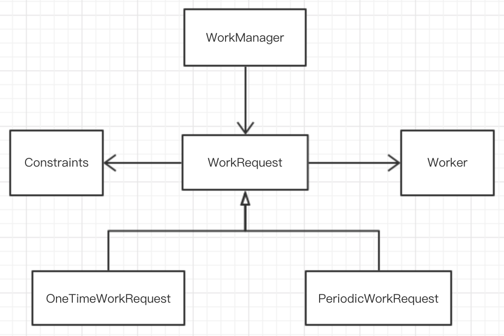

如何使用WorkManager执行后台任务(上)
0x00 简述
WorkManager 是 Android Jetpack中的一部分，它主要是封装了 Android 后台任务的调度逻辑。在前文《Android后台任务处理指南》一文中知道，WorkManager 是高级 API，它实际是封装了JobScheduler, Firebase JobDispatcher, 和 AlarmManager 底层的使用，提供了简单且灵活易用的API，它有很多优势：
- 支持异步一次性或周期任务
- 支持网络、存储空间以及电量状态等约束
- 可使用链式的调用方式来执行任务，也包括并行任务处理
- 一个工作任务的执行结果可以作为下一个任务的输入
- 兼容API 14 以上
- 可以支持Google play services
- 支持LiveData
0x01 理论篇——重要的类
WorkManager库中有一些非常重要的类，这些类帮助你构建后台执行的工作任务：
Worker：这是一个抽象类，它表示一个工作任务，继承这个类实现doWork()方法，这里就是实现执行任务的主要逻辑。WorkRequest：表示一个工作任务请求，指定执行哪个Work，它还可以设置任务执行的约束条件。每一个WorkRequest都有一个自动生成的唯一ID。使用这个ID可以取消任务的执行，或者取得当前任务的执行状态。WorkRequest也是一个抽象类，使用的时候是框架库中提供的子类OneTimeWorkRequest和PeriodicWorkRequest类，分别代表一次性任务和周期任务WorkRequest.Builder：这是一个创建工作任务请求的辅助工具类。它有两个具体的实现：OneTimeWorkRequest.Builder类和PeriodicWorkRequest.Builder类，可以分别创建相应的任务请求实例。Constraints：它表示工作任务执行的约束条件。指的是在哪一些系统条件下（例如只有网络连接情况下），这个工作任务会被执行。同样地，创建Constraints也有Builder方法：Constraints.Builder。约束类是可以在使用WorkRequest.Builder创建的时候进行传递给WorkRequest。
WorkManager：工作任务管理器，它是用于管理工作任务的请求队列的类。通过它可以把一个WorkRequest加入到任务队列中，然后根据系统的资源和约束条件对工作任务进行调度。WorkStatus：工作状态类，它包含了工作任务当前的状态信息。WorkManager为每一个WorkRequest都提供了LiveData对象，而LiveData对象又持有WorkStatus信息，因此通过LiveData可以监听到当前任务的状态信息，并且获取到任务结束后的执行结果。
通过上面的描述，可以简单的画出下面的关系图：

0x02 实践篇——工作流
假设我们在开发一个图片相关的APP，这个应用需要期地压缩它存储的图片。我们使用WorkManager来实现这个需求。这种情况，我们不关心压缩任务什么时候开始，只要开启一个压缩任务，其他的就交给WorkManager了。
- 定义Worker
我们首先要定义一个Worker类，并重写doWork()方法，这里定义了如何执行任务的具体逻辑。例如在此例子中，myCompress()就是具体的执行任务的逻辑。
class CompressWorker(context : Context, params : WorkerParameters)
: Worker(context, params) {
override fun doWork(): Result {
// Do the work here--in this case, compress the stored images.
// In this example no parameters are passed; the task is
// assumed to be "compress the whole library."
myCompress()
// Indicate success or failure with your return value:
return Result.SUCCESS
// (Returning RETRY tells WorkManager to try this task again
// later; FAILURE says not to try again.)
}
}
doWork() 执行后还可以返回执行的结果：Result.SUCCESS、Result.FAILURE和Result.RETRY 分别表示成功、失败、重试。
- 创建WorkRequest
使用WorkRequest的子类，根据具体业务创建对应的请求实例。例如本例中，使用一次性任务来构建请求。然后把任务请求加入到WorkManager管理的队列中。
val compressionWork = OneTimeWorkRequest.Builder<CompressWorker>().build()
WorkManager.getInstance().enqueue(compressionWork)
这样这个任务就交给WorkManager了，任务管理者根据当前系统情况（是否充电、网络状态等等）对任务进行调度。如果没有给WorkRequest指定约束条件，那么这个任务会马上执行。如果需要得到这个任务的状态，可以通过LiveData<WorkStatus>来监听。
WorkManager.getInstance().getStatusById(compressionWork.id)
.observe(lifecycleOwner, Observer { workStatus ->
// Do something with the status
if (workStatus != null && workStatus.state.isFinished) {
// ...
}
})
- 任务约束
可以给一个任务指定约束条件。例如，可以在设备空闲的时候、或者充电的时候执行任务。这种情况，可以使用Constraints.Builder来创建一个约束条件实例，然后传递到WorkRequest中。
// Create a Constraints object that defines when the task should run
val myConstraints = Constraints.Builder()
.setRequiresDeviceIdle(true)
.setRequiresCharging(true)
// Many other constraints are available, see the
// Constraints.Builder reference
.build()
// ...then create a OneTimeWorkRequest that uses those constraints
val compressionWork = OneTimeWorkRequestBuilder<CompressWorker>()
.setConstraints(myConstraints)
.build()
最后，还是调用WorkManager的enqueue方法将WorkRequest加入队列。这时候，WorkManager在执行任务的时候就会考虑约束条件的情况。
- 取消任务
取消任务需要一个任务ID，可以通过WorkRequest来获取。然后调用WorkManager的cancelWorkById方法来取消任务的执行。
val compressionWorkId:UUID = compressionWork.getId()
WorkManager.getInstance().cancelWorkById(compressionWorkId)
- 给任务设置Tag
可以给一组任务设置一个Tag。在创建 WorkRequest 的时候，可以执行给它指定一个Tag；而另一个任务请求也可以设置相同的Tag。
val cacheCleanupTask =
OneTimeWorkRequest.Builder<MyCacheCleanupWorker>()
.addTag("one-tag")
.build()
val loadImageTask = OneTimeWorkRequest.Builder<MyImageLoadWorker>()
.addTag("one-tag")
.build()
WorkManager提供了很多有用的API操作这些相同Tag的任务。例如，WorkManager.cancelAllWorkByTag() 可以取消具有相同Tag的一组任务；还可以通过WorkManager.getStatusesByTag()获取一组任务的状态列表。
- 周期任务
有些业务场景是需要重复执行一个任务的。例如，在一个图片应用中，可能会有一个定期检查需要压缩图片的任务。这时候可使用到 PeriodicWorkRequest.Builder 来创建一个周期任务。跟一次性任务一样，通过WorkManager.enqueue() 方法加入到工作任务队列中。
val photoCheckBuilder =
PeriodicWorkRequest.Builder<PhotoCheckWorker>(12, TimeUnit.HOURS)
// ...if you want, you can apply constraints to the builder here...
// Create the actual work object:
val photoCheckWork = photoCheckBuilder.build()
// Then enqueue the recurring task:
WorkManager.getInstance().enqueue(photoCheckWork)
接下来的事情就交给 WorkManager 了。
0x03 引用
https://developer.android.com/topic/libraries/architecture/workmanager/basics
- 上一篇 Android 后台任务处理指南